oplaydo1 (Windows)
Introduction
-
In 'Fork and Build' we built the 'DR_pi' plugin.
-
In Part 1 of this guide the 'DR_pi' plugin is renamed 'oplaydo1_pi'. The link:/opencpn/developer_manual/plugins/learning/oplaydo1#Using GIMP to make new icons[icon is changed].
-
In link:/opencpn/developer_manual/plugins/learning/oplaydo1#Part 2/ Edit the plugin for new user actions[Part 2] the dialog is changed to allow the user to input 'Start' and 'Finish' positions and generate a GPX file for displaying a route in OpenCPN.
Part 1: Rename the plugin and make a new icon
Additional requirements
GIMP (Free & Open Source Image Editor)
How these programs/script are used will be explained as the guide progresses.
Rename and rebuild
Before you start it is probably worth making a copy of the DR_pi project.

-
Open the DR_pi project with Visual Studio.
-
On the toolbar is a search and replace button. Use this firstly to change every string 'DR_pi' to 'oplaydo1_pi'.

-
Repeat, changing the string 'DR' to 'oplaydo1'.

-
This can cause problems where the string is part of code but we will resolve that later.
-
If you look at 'CMakeLists.txt' you will find that the source file names do not match those in 'Solution Explorer'. The search and replace does not rename files.

-
Save the changes that have been made so far.
-
Rename files. You will need to close Visual Studio first.
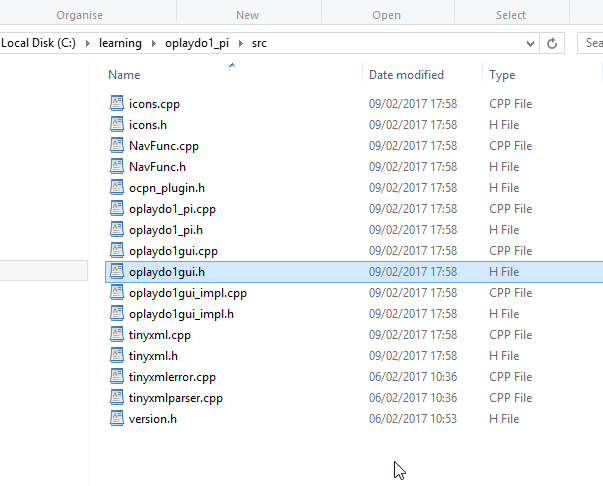
-
The folder 'DR_pi' has been renamed 'oplaydo1'.

-
The '.git' and 'ReadMe.cmd' have been removed and the folder 'build' deleted.
-
Re-build with CMake-GUI. This makes the 'oplaydo1_pi' solution.
The process is exactly the same as that used in 'Fork and Build'.
-
CMake configure and generate. mswu, wxWidgets 3.0.2.

-
Copy 'opencpn.lib' from the 'build' folder of 'DR_pi' to the 'build' folder of 'oplaydo1'.
-
Open the 'oplaydo1.sln' file with Visual Studio.
-
Build the solution.

-
All seems to have worked so the plugin is installed. However there is a problem with the icons.
-
The green jigsaw icon shows that something is not correct.

-
What has happened is that the search and replace has changed 'DR' to 'oplaydo1' in the file 'icons.cpp'. This has invalidated the code for creating the icon. This is the sort of error that needs fixing when an existing plugin is re-purposed. There could be many errors in the code due to unwanted changes not related to the change in the name of the plugin.

-
In this case the change is not needed so change 'oplaydo1' back to 'DR'.
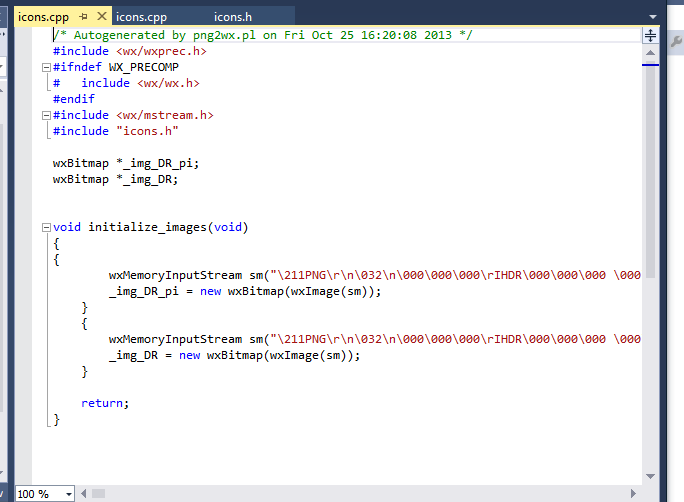
-
Re-build the solution.
-
Re-install the plugin. The icon is now restored to the 'cross'. This will be changed to a new icon shortly.
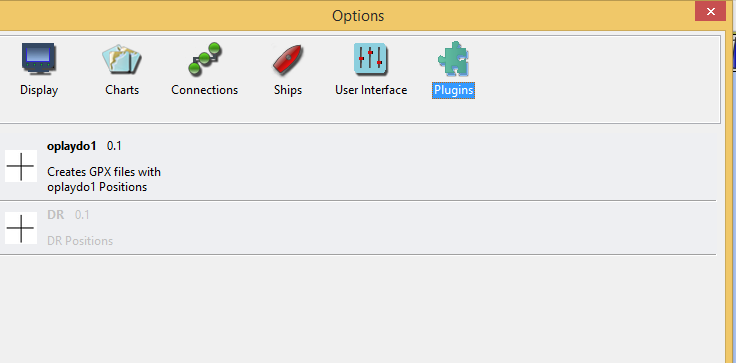
Using GIMP to make new icons
-
Use GIMP to create an image file 32×32 px in size.
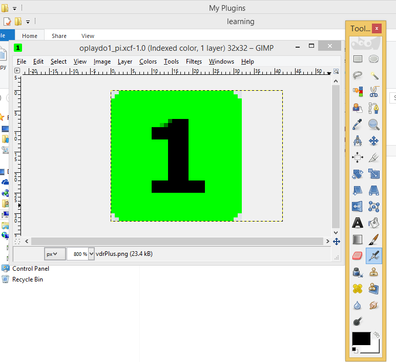
-
When you are satisfied with the image reduce the number of colours to 16.


-
'File/Export'. Export the image as a .png file and save in the root folder of 'oplaydo1'.

-
Saving the file here is just for convenience. If the code files are going to be pushed to GitHub some file removal will be needed later.
-
The file exported is saved as 'oplaydo1_pi.png'. This is the image that will appear in the list of plugins that can be enabled.
-
Using GIMP the image is now changed to show a border. This will be the image used for the toolbar. - Export this new image as 'oplaydo1.png', also to the root folder of 'oplaydo1'.
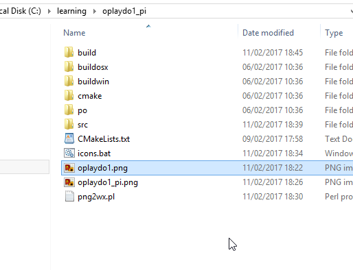
-
Two extra files have appeared, 'icons.bat' and 'png2wx.pl'. These will be explained in the next section.
Using png2wx.pl
-
The two icon images that were created must now be translated into a form that can be used by wxWidgets.
-
When 'Strawberry Perl' was installed an entry was made in the PATH statement. This allows the Perl script to be run from the 'oplaydo1' folder.
-
Make a copy of 'png2wx.pl' in the root folder.
-
Create a new plain text 'batch' file here called 'icons.bat'. This file has only one line:
png2wx.pl -C icons.cpp -H icons.h -M ICONS_H oplaydo1.png oplaydo1_pi.png

-
The batch file is now run by a 'double-click' or 'Open'. This creates two new files in the root folder called 'icons.cpp' and 'icons.h'.

-
In the 'src' folder there are already two files with the same name. These contain the icons for 'DR_pi' and are being replaced. Re-name them as '.bak' or similar, as a backup.
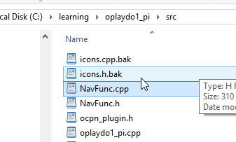
-
Move 'icons.cpp' and 'icons.h' to the 'src' folder.
-
Using Visual Studio re-build the solution.
Making a Package
-
To simplify the installation of the plugin it is useful to make a package.
-
'Right-click' on the folder 'PACKAGE' in 'Solution Explorer'. - 'Build/Build Only Package'.

-
This creates the installer in the folder 'NSIS'.
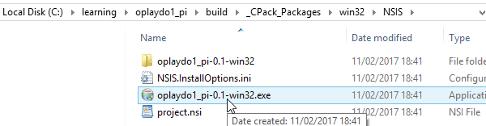
-
Run the installer. The installation script expects the plugins to be in the folder 'plugins', below 'OpenCPN'. If the main folder of OpenCPN has a different name, change it at the prompt. (HINT - put the cursor at the end of the name, make a space and a list of OpenCPN versions installed in parallel will appear. Choose the version of OpenCPN to use for running 'oplaydo1')

-
Start OpenCPN. In the list of 'Options/Plugins' you should see the new icon for 'oplaydo1'. The new icon with the border should appear in the 'Toolbar' of the program if 'oplaydo1' is enabled. Success!

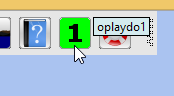
-
To summarise. The plugin has been renamed and the icons changed to match the new project. At present the functionality in 'oplaydo1_pi' is exactly the same as that in 'DR_pi'.
-
In the next part the plugin is adapted for new functionality.
Part 2: Edit the plugin for new user actions
Additional requirements
wxFormBuilder ( RAD tool for wxWidgets GUI design)
Aim
-
Make a new user interface and generate the code for this.
-
Modify the plugin code to use the new interface
-
Remove unwanted code
User Interface
-
Start a new project in wxFormBuilder. Edit the properties. The project will be called 'oplaydo1'. - This is what you are aiming for:
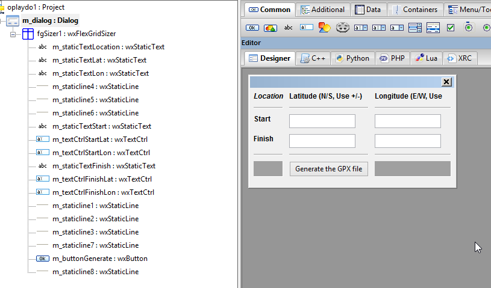
-
An event called 'OnGenerate' has been added to the wxButton 'm_buttonGenerate'. When the plugin is used this button will generate the GPX file, in a format that can be imported to OpenCPN.
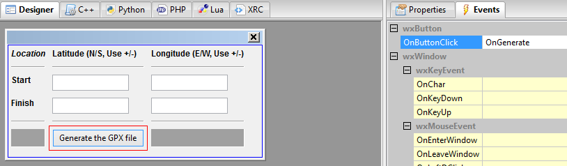
-
In the project properties set 'file' as 'oplaydo1gui'

-
Set the path for generating the code files as 'c:\learning\oplaydo1_pi'. Files 'oplaydo1gui.cpp' and 'oplayd1gui.h' will be made in this folder.

-
Save the wxFormBuilder file as 'oplaydo1.fbp' in 'c:\learning\oplaydo1_pi'.

-
Generate the code

-
We have a problem.
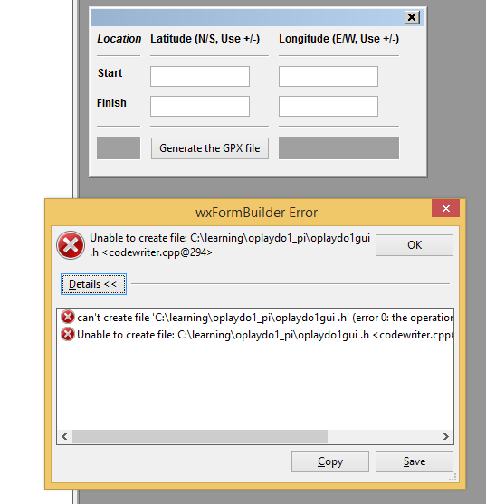
-
Looking at the 'C++' page of wxFormBuilder the code has become corrupt. Not shown here but the '.h"' appeared on a new line with'"' printed in red.

-
By going back to the project properties and changing the file name 'oplaydo1gui' to another name and then back again to 'oplaydo1gui' the error was fixed (A bug in wxFormBuilder - or my machine?)
-
The code is now generated in the two files in 'c:\learning\oplaydo1_pi'.
Modifying the code
-
Make a backup of the files 'oplaydo1gui.cpp' and 'oplayd1gui.h' in 'src' in case you need to refer to them. - Move 'oplaydo1gui.cpp' and 'oplayd1gui.h' from 'oplaydo1_pi' to 'oplaydo1_pi\src'. - Open the solution with Visual Studio

-
Only the main changes are going to be listed here. Compare 'DRgui_impl.cpp' and 'DRgui_impl.h' from the 'DR_pi' plugin with 'oplaydo1gui_impl.cpp' and 'oplayd1gui_impl.h' to see what has been changed.
-
The first error to be addressed is the name of the main dialog class. It has to be changed from 'DlgDef' to 'm_dialog', which was the name given to the dialog in wxFormBuilder.
-
In 'oplaydo1gui_impl.h' change 'DlgDef' to 'm_dialog'.
-
Try to avoid any changes to 'oplaydo1gui.cpp' and 'oplayd1gui.h' or someone using the wxFormBuilder file in the future could have a problem.
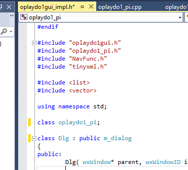
-
The command event 'OnGenerate' has to be linked to a function in 'oplaydo1gui_impl.h'.

-
The function that has the code we want for generating a GPX file is called 'Calculate'. Change 'Calculate' to 'OnGenerate'.
-
In 'oplaydo1gui_impl.cpp' find the function 'Calculate' and rename it as 'OnGenerate'.
-
The functions 'OnPSGPX' is not needed. Parts of 'OpenXML' may be useful. Either delete functions/code or comment out.
-
'Preferences' is not going to be used so 'CfgDlg' references are removed.
-
All the changes are not going to be listed. Source code files can be downloaded here.
-
After removing all the errors and building/installing the plugin the new dialog is shown.

-
Enter the Start and Finish positions and press the 'Generate' button. Errors in input values will result in an error message.
-
If there are no errors the 'Save File' dialog will appear and you can enter a name (no extension) for the GPX file. If you add .gpx to the file name you will find the name ends in .gpx.gpx when saved.

-
Test the GPX file by importing using the OpenCPN Route Manager

-
The final route will appear on the chart